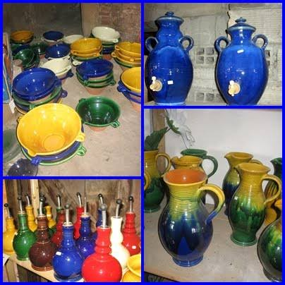

Céramique
du Razès


⟹ Artisanat & Savoir-faire ⟸
Le Razès, ancien pays historique de l'ouest audois organisé autour de la vallée de l'Aude, de Limoux et des collines qui annoncent les Pyrénées, appartient à un vaste territoire où le travail de l'argile accompagne depuis des siècles la vie rurale. Avant d'être un art décoratif, la poterie est d'abord un artisanat du quotidien : la terre cuite sert à fabriquer récipients de cuisine, cruches, pots de conservation, bassins, tuiles, briques et éléments destinés aux exploitations agricoles. La présence d'argiles, l'abondance autrefois plus grande du bois nécessaire aux fours et les besoins des villages expliquent l'implantation durable de métiers liés à la terre dans cette partie de l'Aude.
À Belvèze-du-Razès, cette histoire est encore lisible dans le bâtiment même de la Poterie du Razès. Édifié vers 1900 pour servir de tuilerie, il appartenait à cette génération d'ateliers ruraux qui transformaient sur place l'argile en matériaux de construction. Tuiles et briques étaient indispensables à l'architecture des maisons, granges, chais et dépendances agricoles du pays. Le passage de la tuilerie à la poterie illustre ainsi une évolution fréquente de l'artisanat de la terre : les mêmes ressources, les mêmes espaces de séchage et la maîtrise du feu pouvaient être réorientés vers des objets domestiques ou décoratifs.

La reconversion intervient en 1973, lorsque l'ancienne tuilerie devient véritablement une poterie. Jean-Michel Campagne y apprend le métier auprès de François Ambri, qu'il désignera plus tard comme son « maître à penser ». Potier depuis le début des années 1970, il acquiert ensuite l'établissement en 1998 et inscrit son activité dans la continuité de ce lieu consacré depuis près d'un siècle à la transformation de l'argile.
Le parcours de Jean-Michel Campagne témoigne d'une conception complète du métier de potier : préparation de la terre, tournage, séchage, engobage, vernissage, émaillage, recherche des couleurs et cuisson. Son atelier produit aussi bien de la vaisselle — plats à gratin, plats à cassoulet, tasses, services, vinaigriers — que de grandes pièces de jardin, jarres et vases de type Anduze, ainsi que des commandes particulières. La couleur occupe une place importante dans son travail, avec des recherches sur les glaçures, les émaux et les engobes afin d'obtenir des nuances allant des tons naturels aux jaunes, verts, bleus, rouges ou noirs.
Cette poterie est aussi liée à l'évolution économique de l'artisanat français à la fin du XXe et au début du XXIe siècle. À mesure que la vaisselle industrielle et les productions importées se généralisent, le potier de village ne peut plus seulement répondre aux besoins domestiques de proximité : il doit défendre la pièce artisanale, diversifier ses créations, travailler sur commande et aller à la rencontre du public. La Poterie du Razès s'est ainsi fait connaître bien au-delà de Belvèze, auprès d'une clientèle régionale et touristique, mais aussi par l'intermédiaire de revendeurs dans d'autres régions françaises.
Jean-Michel Campagne a également participé à la valorisation collective de la céramique audoise. Président de l'association Terre d'Aude, il a contribué à l'organisation de marchés de potiers, notamment à Limoux, où tournage, démonstrations et initiations permettaient de montrer au public la diversité de la céramique contemporaine : faïence décorée, poterie de jardin, sculpture, bijoux ou encore cuisson raku. Cette transmission par le geste prolonge l'ancienne fonction sociale de l'atelier, lieu à la fois de production, d'apprentissage et d'échange.
Le savoir-faire familial s'est également transmis à son fils Sylvain Campagne, entré très jeune dans l'atelier et formé au tournage, au glaçage, aux engobes, à la décoration et à la cuisson. Cette transmission entre générations rappelle que la pérennité d'une poterie ne repose pas seulement sur des formes ou des recettes d'émaux, mais sur des milliers de gestes appris au contact d'un praticien expérimenté : centrer une masse de terre, monter une paroi régulière, anticiper le retrait au séchage ou encore maîtriser les réactions de la pièce au four.
L'atelier a aussi montré la capacité de la poterie traditionnelle à renouer avec des usages très anciens. En 2014, Jean-Michel Campagne réalise notamment de grandes jarres de vinification pour un domaine viticole audois, en incorporant de la terre provenant du vignoble. Ces pièces d'environ 150 litres, tournées et cuites sur place, rappellent que bien avant les cuves métalliques et les barriques modernes, la céramique fut pendant des millénaires l'un des principaux matériaux de conservation, de transport et parfois de fermentation du vin autour de la Méditerranée.
La Poterie du Razès se situe ainsi à la rencontre de plusieurs histoires : celle des tuileries rurales, celle de la poterie utilitaire, celle de la céramique d'art et celle d'un artisanat contemporain qui cherche à transmettre ses techniques. L'ancienne tuilerie de Belvèze-du-Razès constitue à elle seule un témoin de cette continuité : un bâtiment né pour cuire la terre au début du XXe siècle demeure, plus d'un siècle après, un lieu où l'argile est encore tournée, émaillée et cuite.
Dans un territoire placé entre Carcassonne, Limoux, le Lauragais et les premiers reliefs pyrénéens, cette activité dialogue enfin avec une histoire céramique audoise beaucoup plus vaste, depuis les ateliers antiques de la Narbonnaise jusqu'aux poteries culinaires du Lauragais. La céramique du Razès n'est donc pas un style historique fermé ni une appellation protégée : elle représente plutôt un artisanat de territoire, façonné par un lieu, un atelier, des hommes, des usages et une longue familiarité régionale avec la terre et le feu.